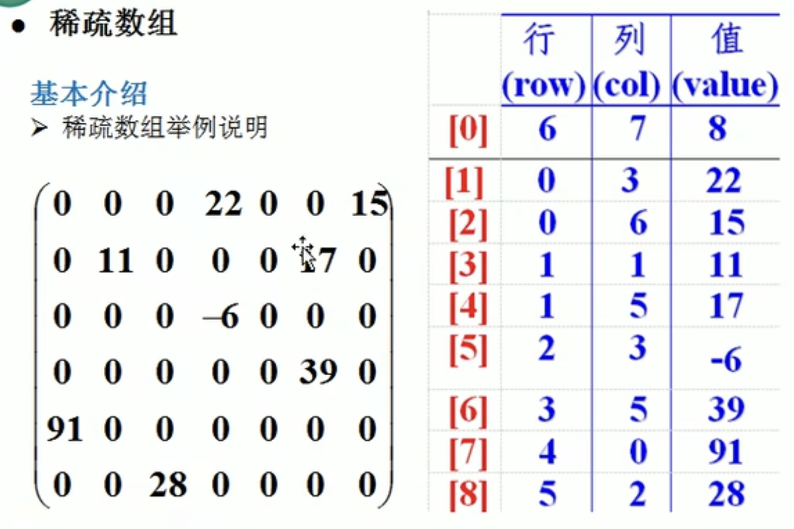

基础知识
线性结构
常见的有：数组、队列、链表和栈
稀疏数组
当一个数组中大部分元素为0，或者同一个值的数组时，可以使用稀疏数组保存该数据
稀疏数组的处理方法是：
1）记录数组一共有几行几列，有多少个不同的值
2）把具有不同值的元素的行列及值记录在一个小规模的数组中，从而缩小数组的规模

二维数组转稀疏数组的思路
1.遍历原始二维数组，读取有效数据个数sum
2.根据sum的值创建稀疏数组 int [sum +1] [3]
3.将二维数组的有效数据依次填到稀疏数组
稀疏数组转二维数组的思路
1.读取稀疏数组第一行数据，得到原二维数组的行和列，还原二维数组，比如上面的chessArr2 = int[6] [7]
2.再读取稀疏数组后几行的数据，依次还原到对应的二维数组的位置
代码实现
public class SparseArray {
public static void main(String[] args) {
int[][] chessArr1 = new int[11][11];
chessArr1[1][2] = 1;
chessArr1[2][3] = 2;
chessArr1[3][4] = 2;
System.out.println("原始二维数组");
for (int[] row : chessArr1) {
for (int data : row) {
System.out.printf("%d\t",data);
}
System.out.println();
}
int sum = 0;
for (int i = 0; i < 11; i++) {
for (int j = 0; j < 11; j++) {
if (chessArr1[i][j] != 0){
sum++;
}
}
}
System.out.println("非0的个数：" + sum);
int[][] sparseArr = new int[sum+1][3];
sparseArr[0][0] = 11;
sparseArr[0][1] = 11;
sparseArr[0][2] = sum;
int count = 0;
for (int i = 0; i < 11; i++) {
for (int j = 0; j < 11; j++) {
if (chessArr1[i][j] != 0){
count++;
sparseArr[count][0] = i;
sparseArr[count][1] = j;
sparseArr[count][2] = chessArr1[i][j];
}
}
}
System.out.println();
System.out.println("得到的稀疏数组为:");
for (int i = 0; i < sparseArr.length; i++) {
System.out.printf("%d\t%d\t%d\t\n",sparseArr[i][0],sparseArr[i][1],sparseArr[i][2]);
}
int[][] chessArr2 = new int[sparseArr[0][0]][sparseArr[0][1]];
for (int i = 1; i < sparseArr.length; i++) {
chessArr2[sparseArr[i][0]][sparseArr[i][1]] = sparseArr[i][2];
}
System.out.println("恢复后的二维数组");
for (int[] row : chessArr2) {
for (int data : row) {
System.out.printf("%d\t",data);
}
System.out.println();
}
}
}
|
非线性结构
常见的有：二维数组、多维数组、广义表、数结构、图结构

 wechat
wechat alipay
alipay